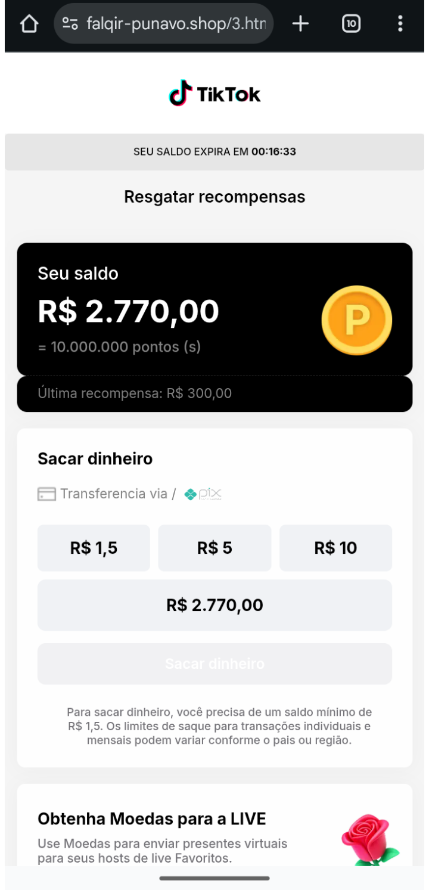
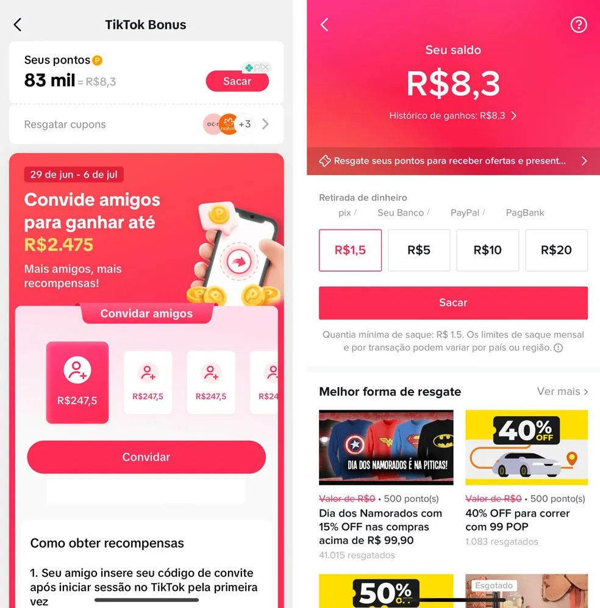
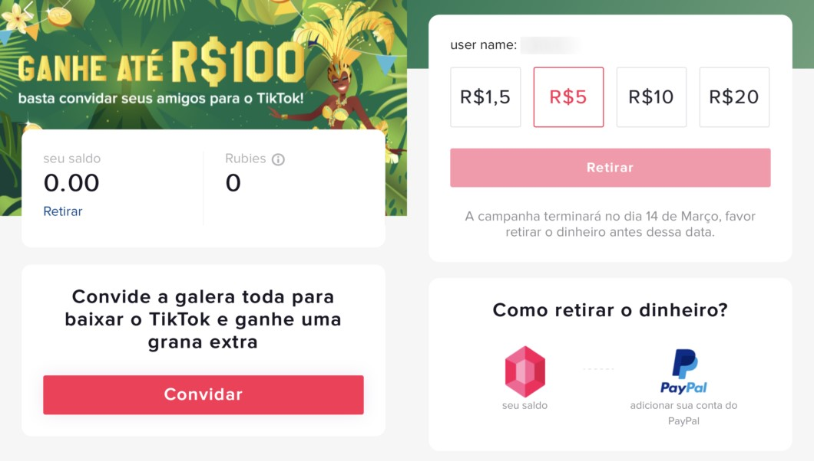

Como Assistir Vídeos no TikTok e Ganhar Dinheiro
Aprenda a fórmula oficial: assiste e ganhe moeda no TikTok todos os dias, acumule bônus no aplicativo e descubra como sacar dinheiro no TikTok diretamente via PIX.
Resgatar Moedas e Recompensas no TikTokPasso a Passo para Ganhar Recompensas no TikTok
Baixar o TikTok e Acessar o Programa
O primeiro passo é baixar o tiktok no celular através das lojas oficiais ou pelo link promocional. Baixe o TikTok, faça login e localize o ícone de moeda dourada (TikTok Bônus) no seu perfil.
Assista aos Vídeos e Ganhe Moeda no TikTok
No feed principal, cumpra a meta diária estipulada de 5, 10 ou 20 minutos. No modelo assiste e ganhe moeda no tiktok, o medidor acumula pontos que são convertidos em saldo real todos os dias.
Como Sacar Dinheiro no TikTok via PIX
Quando atingir o valor mínimo de saque (como R$ 1,50, R$ 5,00 ou R$ 10,00), vá até a carteira e resgate suas recompensas no tiktok diretamente por transferência bancária instantânea.



Como Ganhar Recompensas no TikTok com Segurança
Para conseguir ganhar recompensas no tiktok com consistência, evite usar bots ou automações. O algoritmo do tiktok identifica atividades suspeitas e pode bloquear transferências. Para garantir seus bônus, sempre baixe o tiktok atualizado pela loja de aplicativos oficial.
Perguntas Frequentes sobre Moedas e Saques no TikTok
Como assistir vídeos no TikTok e ganhar dinheiro de verdade?
Para assistir vídeos no TikTok e ganhar dinheiro, você precisa instalar o aplicativo, acessar a aba de missões pelo ícone de moeda e manter-se ativo no feed cumprindo os minutos exigidos pela promoção diária.
Qual o segredo do método assiste e ganhe moeda no TikTok?
O método assiste e ganhe moeda no TikTok funciona através de campanhas temporárias da própria plataforma, onde o usuário recebe pontos (rubies) por tempo de tela que podem ser convertidos em reais.
Como sacar dinheiro no TikTok passo a passo?
Basta abrir sua carteira no aplicativo, clicar em 'Sacar', selecionar a chave PIX previamente cadastrada e confirmar o valor desejado. A transação costuma cair quase de imediato.
Onde baixar o TikTok oficial para garantir as recompensas?
Para ter direito aos bônus promocionais, você deve baixar o TikTok exclusivamente pela Google Play Store (para celulares Android) ou App Store (para iPhone).